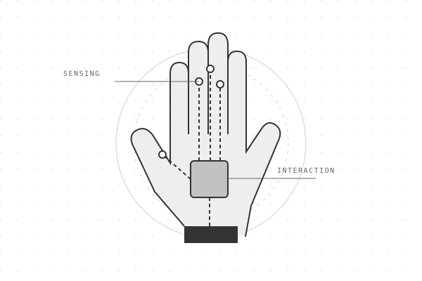
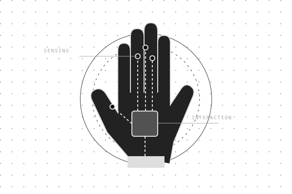
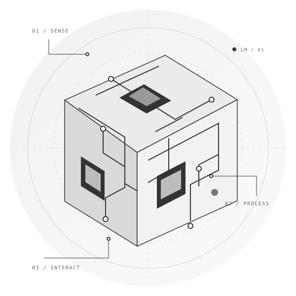
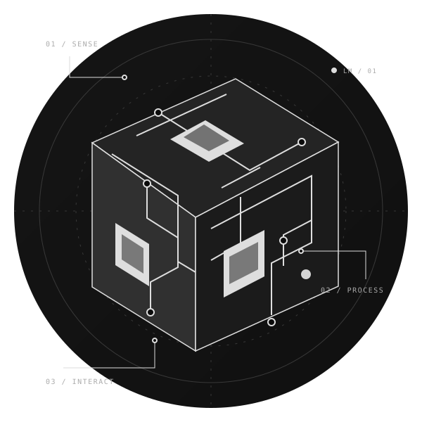
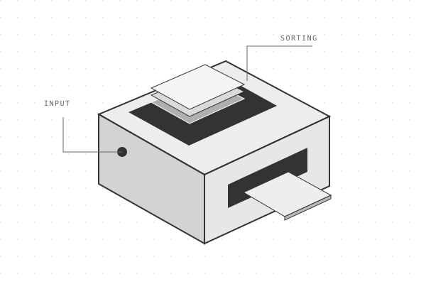
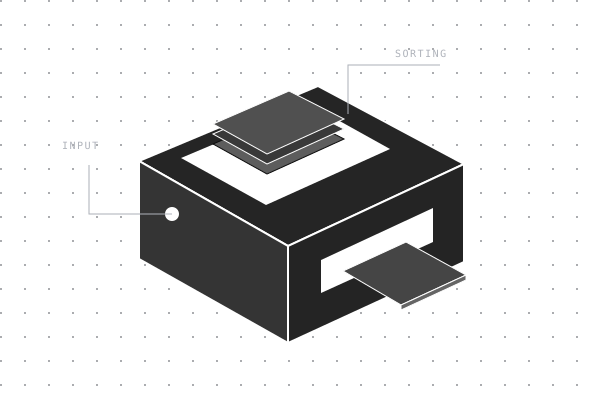

01 / Embedded


CONCEPT ILLUSTRATIONVR Haptic Glove
Exploring the connection between physical interaction and virtual environments.
I’m Lahiru, an embedded systems engineer in Sri Lanka. My work connects firmware and hardware with a curiosity for robotics and computer vision.


A selection of projects across interactive hardware, automation, and machine perception.


CONCEPT ILLUSTRATIONExploring the connection between physical interaction and virtual environments.


CONCEPT ILLUSTRATIONA card-sorting project at the intersection of hardware and automation.

 CONCEPT ILLUSTRATION
CONCEPT ILLUSTRATIONA project connecting real-time object recognition with robotic arm control.

 CONCEPT ILLUSTRATION
CONCEPT ILLUSTRATIONAn automatic license plate recognition unit with a gate-control function.
A power-board design for powering Arduino projects from AC, with a battery-charging function.
A development-board design bringing a shielded module, pushbuttons, and pin headers together on one PCB.
I develop embedded firmware and integrate microcontrollers, sensors, and connected devices. My work spans hardware–software integration, robotics, and computer vision, with a focus on the practical challenges of connecting code to physical systems.
I’m interested in conversations with engineering teams and people developing new products. Explore my public work, or get in touch to discuss a role, a collaboration, or a project.
From the device itself to how it understands and interacts with its environment.
Firmware for ESP32, STM32, and other microcontrollers, with sensor integration and peripheral control.
Projects spanning physical interaction, sorting, and vision-guided manipulation.
Exploring image-based recognition and perception for physical systems.
An ESP8266 project exploring how multiple analog sensors can share one analog input.
The repository documents sequential sensor switching, an Arduino sketch, and a circuit diagram. Explore the implementation and its original notes.
Let’s talk about embedded systems, robotics, or your next hardware project.